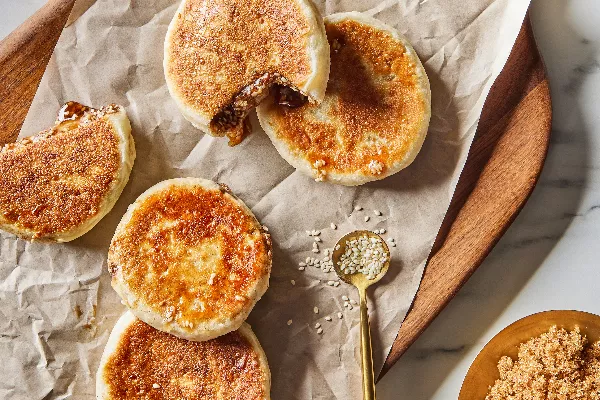

Hotteok :3

Recipe
Ingredients
※ For the dough ※
- 1½ cup (188 g) all-purpose flour
- ¾ cup (87 g) glutinous (sweet) rice flour
- 2 tbsp (25 g) demerara sugar
- 1 tbsp (9 g) sesame seeds, lightly toasted
- 2 tsp (8 g) instant yeast
- ½ tsp (3 g) salt
- ¾ cup + 2 tbsp (218 ml) milk
- 2 tsp (9 g) butter
- A pinch of cardamom powder
※ For the filling ※
- ½ cup (109 g) demerara sugar, packed
- 3 tbsp (27 g) sesame seeds, lightly toasted
- 1 tsp (4 g) ground cinnamon
- 1 tbsp (14 g) butter
- Canola oil (for frying)
Directions
※ For the dough ※
- In a large bowl, whisk together the all-purpose flour, glutinous rice flour, the demerara sugar, sesame seeds, instant yeast, and salt until well combined.
- In a microwaveable bowl or measuring cup, heat milk and butter until warm; 115–130°F (46–54°C).
- Add warm milk mixture to the dry ingredients. Using a large rubber spatula, mix until a soft sticky dough forms; about 2 minutes.
- While still in the bowl, shape the dough into a ball. Cover bowl with plastic wrap. Place in a warm, draft-free location to ferment. Allow dough to rise until it doubles in size; about 1 hour.
- Punch down the dough. Remove the dough from the bowl. Knead a few times on a lightly floured work surface until dough becomes less sticky. Cover dough with plastic wrap and allow to rest; 10 minutes.
※ For the filling ※
- In a bowl, mix the demerara sugar, sesame seeds, and cinnamon until well combined. Work the butter into the brown sugar mixture until it looks like wet sand. Set aside.
※ To assemble the pancakes ※
- Using a scale, weigh the dough. Using a bench scraper or sharp chef’s knife, portion and weigh out the dough into 8 equal pieces. Alternatively, use a sharp chef’s knife to divide dough into 8 evenly sized portions. Round each portion into a ball. Using the palm of your hands or a rolling pin, flatten and stretch each ball into a 4- to 5-inch circle.
- Place a heaping tablespoon of filling into the centre of each round. Carefully stretch and pinch the edges of the dough together over the filling, sealing it. Repeat with the remaining balls of dough.
- Heat about 1 tablespoon of oil in a nonstick skillet or cast iron pan over medium heat. Place two balls, seam side down, into the hot oil. Fry for about 1 to 2 minutes, sealing the seam, and letting the dough crisp up and turn a deep golden brown. Carefully turn the balls over. With the aid of a spatula (turner), slowly and gently flatten each ball down into a pancake. Fry for an additional 1 to 2 minutes until golden. Reduce heat to medium-low. Turn over again, and cover with a lid to brown the outer edges of the first side and melt the filling.
- Remove and place onto a dish or baking sheet lined with paper towels. Repeat process with the remaining pancakes. Serve immediately while pancakes are still hot.